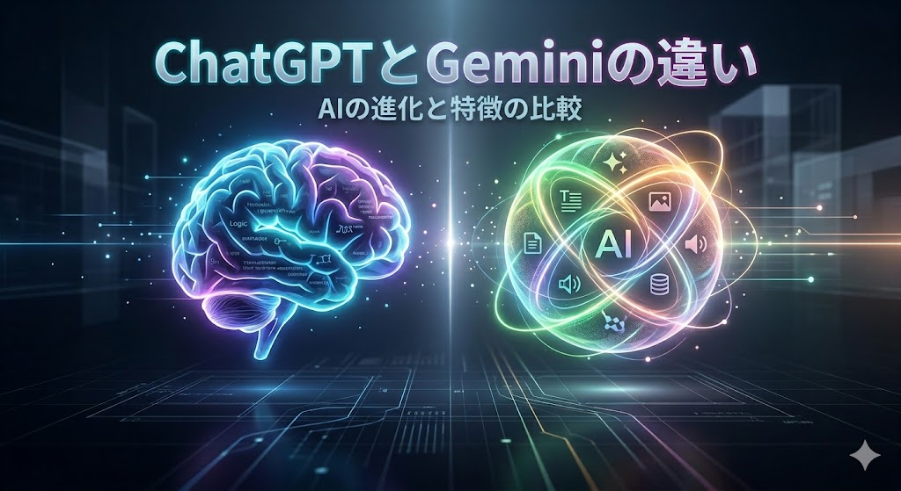

「ChatGPT」と「Gemini」の違い

近年急速に発展している「AI」。その中でも、テキストや画像、動画などを高精度かつハイスピードで作り出す「生成AI」は、ビジネスや研究の現場で欠かせない存在になっている。今後は、こういったAIをどのように活用するかのスキルが、ますます重要になってくるだろう。そこで本記事では、現在主流になっている生成AIの2大巨頭である「ChatGPT」と「Gemini」に焦点を当て、それぞれの特徴や得意分野について詳しく調査し、その結果を示す。
そもそも「ChatGPT」や「Gemini」とは？
「ChatGPT」や「Gemini」は、いわゆる「生成AI」と呼ばれるものです。世の中にある大量のテキストデータをあらかじめ学習しており、人間のように自然な会話や文章を生成することができます。
近年では文章だけでなく、画像や音声、動画、プログラムなど幅広く生成・処理する能力（マルチモーダル）も備わっています。
それぞれには開発元の違いがあり、AIブームを巻き起こしたOpenAIの「ChatGPT」と、強力な検索インフラを持つGoogleの「Gemini」という二つの巨頭が、それぞれの強みを活かして開発を競っています。
「ChatGPT」と「Gemini」の強み
ChatGPTとGeminiの違いについて、 マネーフォワードクラウド による最新のAI検証データを参考にまとめる。
ChatGPTの強み
ChatGPTの最大の強みは、「複雑な指示を正確に理解し、論理的に解決する能力」にあります。
人間が書いたような自然な日本語を生成できるのが特徴で、プログラミングのエラー修正（デバッグ）や、Excelなどの複雑なデータ分析といった、正確さが求められる作業で高い実力を発揮します。さらに、自分の仕事や好みに合わせて、専用のAIアシスタントとして自由にカスタマイズできる柔軟性も備えています。
Geminiの強み
Geminiの最大の強みは、「圧倒的な情報処理のスピード」と「Googleの最新インフラとの連携」にあります。
一度に読み込める情報量が非常に多い点が大きな特徴です。本数冊分に相当する長大な資料や、長時間の動画ファイルを丸ごと読み込ませて、一瞬で要約やデータ抽出を行う作業で高い実力を発揮します。
さらに、最新のGoogle検索によるリアルタイムの情報収集に加え、GmailやGoogleドライブといった日常ツールと連携して業務を効率化できる点も備えています。
まとめ
結論として、じっくり深く考える作業には「ChatGPT」、大量の情報やスピードを求める作業には「Gemini」を選ぶのが最適だ。
プログラミングの構築やExcelのデータ分析、企画のアイデア出し、そして自分仕様のAIカスタマイズなど、緻密さとアウトプットの質を重視する場面ではChatGPTが真価を発揮する。
一方で、本数冊分の膨大な資料や動画のスピード要約、最新トレンドのリアルタイム調査、またGmailなどGoogleツールと連携して作業を自動化したい場面ではGeminiが圧倒的に便利だ。
目の前のタスクに合わせてこの2つを賢く使い分けることが、これからのAI活用の鍵になる。